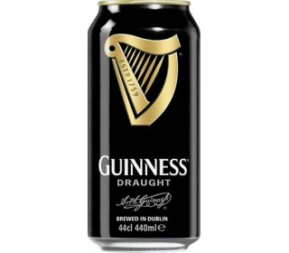

Пиво темное Guinness Draught

Описание
Знаменитый ирландский стаут. Отличается насыщенным хлебным ароматом и горьковатым привкусом, с яркими нотками обжаренного кофе.
Температура сервировки 11-13 °С. Гастрономические рекомендации: тигровые креветки, устрицы, мясные запеканки, мясо на гриле.
Информация
Категория: Пиво темное, ж/б
Бренд: Guinness
Подробное описание товара
Cтрана производитель: Ирландия
Объём: 440 мл
Состав продукта: вода, солод, ячмень, обжаренный ячмень, хмель, дрожжи
Содержание спирта: 4.2
"Все права защищены"